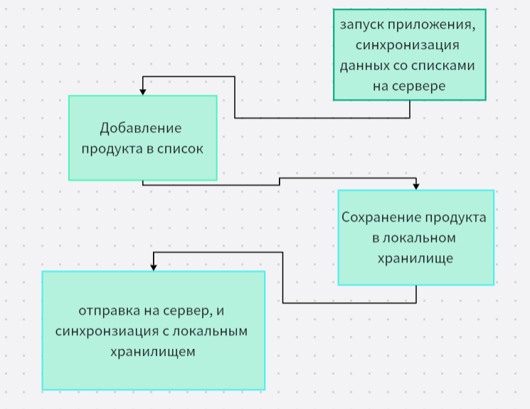

JB
Первый проект
ListFlow
Организация покупок на новом уровне
Актуальность
Почему это необходимо
Каждый из нас сталкивался с ситуацией, когда в магазине вдруг забываешь самое главное. Бумажные заметки теряются, записи в телефоне разрознены, а семейные чаты превращаются в бесконечный поток сообщений. Традиционные способы планирования покупок давно устарели и не справляются с современным ритмом жизни.
ListFlow рождался именно из этой потребности — создать надёжного цифрового помощника, который всегда под рукой. Мы проанализировали слабые места существующих решений и предложили принципиально другой подход: минималистичный, но при этом мощный и удобный инструмент для ежедневного использования.

Ценности
На чём построен ListFlow
Минимализм
Мы убрали всё лишнее. Интерфейс настолько интуитивен, что не требует обучения. Добавление товара занимает пару секунд, отметка о покупке — одно касание. Никаких отвлекающих элементов, только то, что действительно нужно для управления списком.
Облачная синхронизация
Ваши списки всегда актуальны на всех устройствах. Начали планировать на компьютере — продолжите с телефона в магазине. Данные надёжно сохраняются и синхронизируются в реальном времени, без задержек и потери информации.
Уверенность и контроль
Забудьте о чувстве "кажется, я что-то забыл". Структурированные категории, понятные чек-листы и прозрачная статистика выполнения дают полный контроль над процессом покупок. Вы точно знаете, что ничего не упустили.

Наш подход
Как мы меняем привычный процесс
ListFlow — это не просто очередное приложение для заметок. Это полноценная экосистема для управления семейными покупками. Мы объединили простоту бумажного списка с мощью цифровых технологий: автокатегоризация, удобный поиск, быстрая отметка купленного и многое другое.
Благодаря продуманной архитектуре, приложение работает молниеносно даже на устройствах среднего класса. Мы уделили особое внимание мелочам: анимациям, тактильной обратной связи и визуальной эстетике. Пользователь получает не просто инструмент, а приятный ежедневный ритуал.